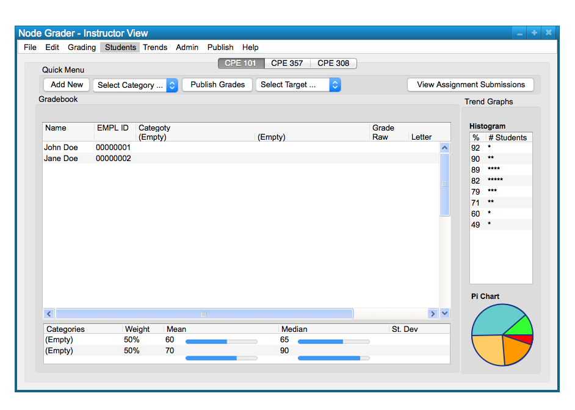

To export students, first you click the 'Students' option on the toolbar, as seen in Figure 1.

Figure 1
You then click the 'Export (.csv)' option so that the export dialog will pop up.
Figure 2
The pop up will let you choose which set of students to export as well as choose another format. This is shown below, in Figure 3.

Figure 3
When the 'Save' button is clicked, the export begins. This is shown below, in Figure 4.

Figure 4